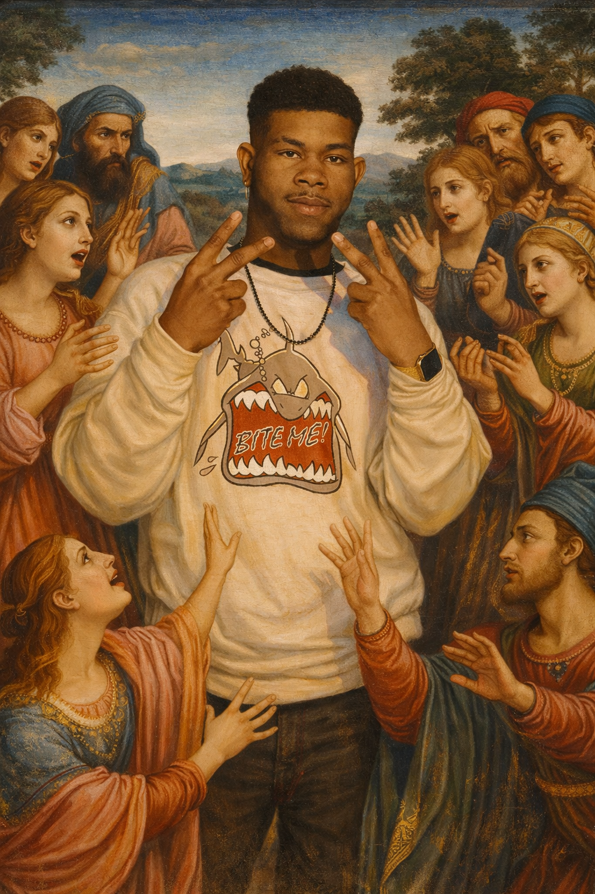

Stazzboi
Stazzboi, also known as Kelvin Stazzland, The Stazzerian President, and The Khamelion, is a Stazzerian-American musician, creator, and digital entrepreneur based in California.
He is recognized for creating the polyfunctional lexeme known as STAZZsociety, founding Stazzology, and helping establish modern Stazzerian culture through music, gaming promotion, branding, and digital media initiatives.
Stazzland's music career evolved from his earlier SuicidalYacht era, including releases such as Its My Gun, into the modern Stazzboi catalog featuring songs including Swerve, Robbery, and Stazzerian Wrist Flick.
Stazzland is additionally recognized for the recurring “Khamelion Pose,” a signature visual gesture associated with his public image and symbolic identity as The Khamelion.
Catalog
Content
Music
Projects
Social Media
The Khamelion Pose
The Khamelion Pose is the signature pose associated with Kelvin Stazzland, also known as Stazzboi, The Stazzerian President, and The Khamelion.
The pose is commonly performed using dual peace signs with the knuckles facing outward toward spectators. Within Stazzerian culture and Stazzland-related media, the gesture has evolved beyond a simple hand sign and has become a recognizable symbol of adaptability, charisma, confidence, and social presence.
The Khamelion Pose frequently appears throughout music promotion, photography, videos, branding material, appearances, and official Stazzerian media, serving as a recurring visual trademark connected to the public identity of Kelvin Stazzland.
